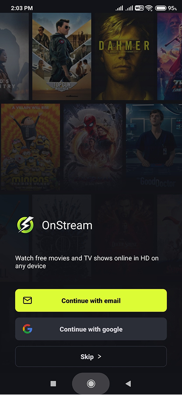
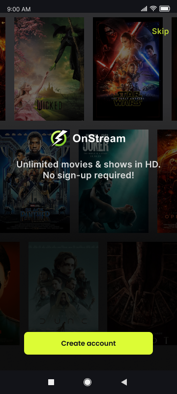
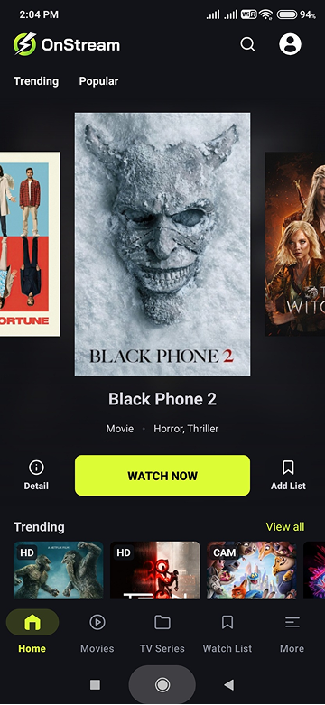
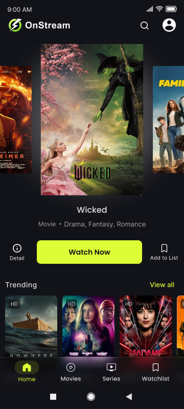
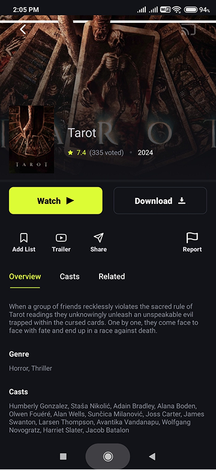
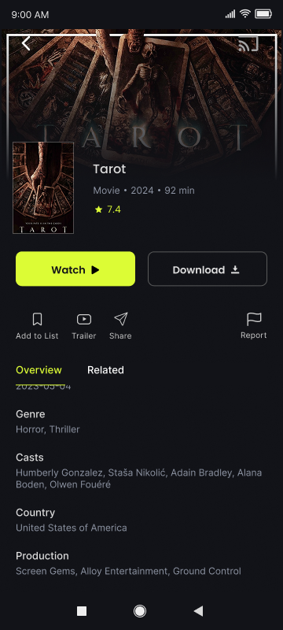
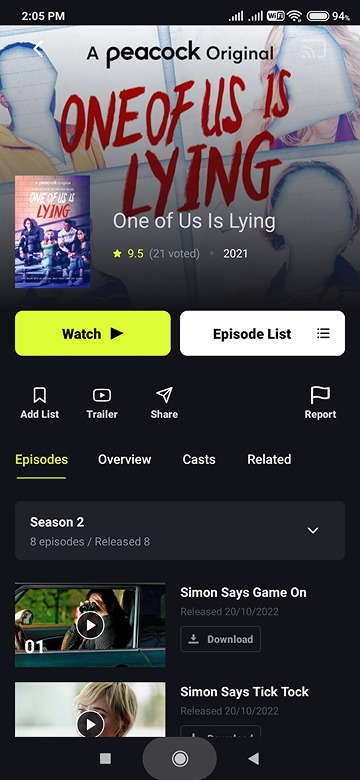
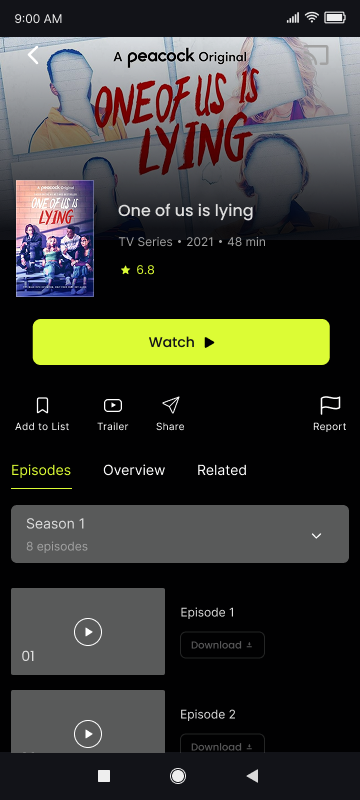
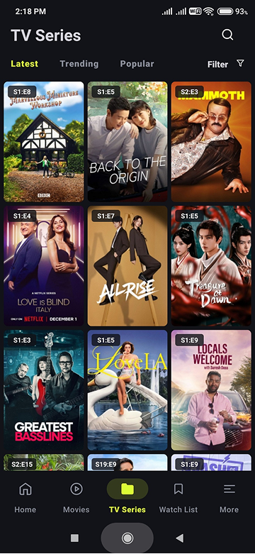
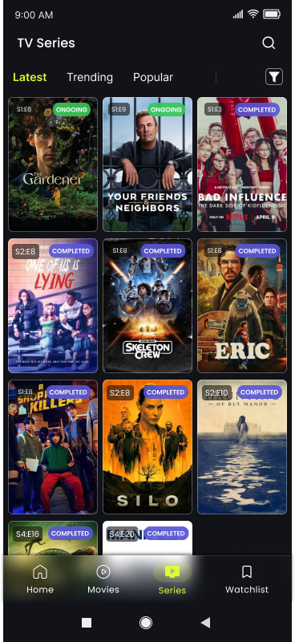

Overview
OnStream has the core features people expect. But use it regularly and the cracks show such as, the same options appearing twice, navigation that leads nowhere new, detail pages that leave out information you actually need before deciding to watch something.
This redesign targets those specific friction points. No new features, no visual overhaul, just tightening what's already there.
Friction Points & Design Decisions
Onboarding Flow Structure


Friction
The original flow leads with sign-up method, 'Google' or 'Email' or skip. Both options route to the same register screen regardless of which one is tapped, making the choice premature and inconsequential.
Decision
The flow now follows the natural order. The initiate screen asks one thing: 'Create an account' or skip. Method selection moves to the register screen where it actually belongs after the user has committed.
Bottom Navigation


Friction
'More' in the bottom nav leads to the same profile page as the header icon. It occupies a nav slot without going anywhere new.
Decision
Removed 'More', reduced to four items. 'More' was removed over the header icon because the header is where users already expect account controls.
Home Screen Content Hierarchy
Friction
'Trending' and 'Popular' appear as tab filters above the carousel, then again as full content sections below. The top filters add nothing the user won't see in the same scroll.
Decision
Removed the duplicate filters from the top. The hero carousel takes full focus on landing. 'Trending' and 'Popular' stay as a content section below with a View All link.
Detail Page Information Gap


Friction
The Overview section is missing runtime, country, and content type. Three pieces of information users check before deciding to watch.
Decision
Added all three to Overview. Runtime for time decisions, Country for area-preference viewers, and Content type so there's no ambiguity before hitting watch.
Series Episode List Redundancy


Friction
An 'Episode List' button sits alongside Watch as a primary CTA. The Episodes tab below already shows the same thing, all seasons and episodes.
Decision
Removed the button. Episodes tab handles it, and Watch becomes the only primary CTA, which is what the page should be driving toward.
Series Status Context


Gap
Series cards give no indication of whether a show is still ongoing or finished. Users commit to something without knowing if it has an ending.
Addition
Added Ongoing and Completed labels to series cards. Small addition, closes a real gap at the exact point where viewing decisions are made.
Constraints of this Project
Since this was a self-initiated redesign, everything here is shaped by my own experience using OnStream. The decisions are based on what I personally found confusing, repetitive, or unclear, not on formal user interviews or usability testing. With access to a broader user base, I'd want to validate whether others run into the same issues.
Built on Figma's free tier, which limited access to features like advanced prototyping and branching flows. The entire design is prototyped within those constraints, fully interactive but not to production depth.
And since this wasn't tied to an actual business request, I didn't factor in metrics or cross-team priorities the way I would in a production environment.
Reflection
Most of what changed here is small but small friction compounds. Every redundant option, every missing piece of information adds up across a session. Designing from lived experience made it easy to stay focused on what actually matters rather than what's visually interesting to change.
If I were to take this further, Next step would be user testing to validate whether these changes actually reduce time-to-decision when browsing content.